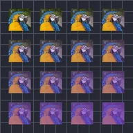

گرڈ ری پیٹ

لیئر کی متعدد کاپیاں گرڈ میں ترتیب دے کر متحرک طور پر بناتا ہے۔
گرڈ ری پیٹ لیئر کی کاپیاں گرڈ میں بناتا ہے۔ کاؤنٹ بتاتا ہے کہ کتنی کاپیاں ہوں، اور پوزیشن ان کے درمیان فاصلہ طے کرتی ہے۔ رینج کی سیٹنگز ہر کاپی کو پچھلی کاپی سے تھوڑا مختلف ہونے دیتی ہیں: چھوٹی یا بڑی، گھمائی ہوئی، زیادہ شفاف۔ رینڈم آرڈر اور سیڈ بے ترتیب کرتے ہیں کہ کون سی کاپی کو کون سی ویلیوز ملیں۔ ہر کاپی کی تاخیر ہر کاپی کی اینیمیشن کو پچھلی کاپی سے تھوڑا بعد چلاتی ہے، اور رینڈم پوزیشن، رینڈم روٹیشن، رینڈم اسکیل اور رینڈم اوپیسٹی ہر کاپی کو تھوڑا مختلف بنا دیتی ہیں۔ ایفیکٹس کا استعمال دیکھیں۔
سیٹنگز
| سیٹنگ | قسم | رینج | ڈیفالٹ |
|---|---|---|---|
| کاؤنٹ | نمبر | 0 سے 150 تک | 5 |
| پوزیشن | پوائنٹ (X, Y) | -99999 سے 99999 تک | 500, 500 |
| اسٹیگر | نمبر | -9999 سے 9999 تک | 0 |
| رینج پوزیشن | پوائنٹ (X, Y) | -99999 سے 99999 تک | 0, 0 |
| رینج اسکیل | نمبر | 0 سے 10 تک | 1 |
| رینج روٹیشن | زاویہ | -3600° سے 3600° تک | 0° |
| رینج اوپیسٹی | نمبر | 0% سے 100% تک | 100% |
| فل رنگ | رنگ | – | #FFFFFF |
| فل مقدار | نمبر | 0% سے 100% تک | 0% |
| رینج اسٹارٹ | نمبر | 0% سے 100% تک | 0% |
| رینج اینڈ | نمبر | 0% سے 100% تک | 100% |
| رینج آفسیٹ | نمبر | -1000% سے 1000% تک | 0% |
| ایزنگ | انتخاب | لکیری, ایز اِن, ایز آؤٹ, ایز اِن آؤٹ | لکیری |
| رینڈم آرڈر | آن یا آف | – | آف |
| سیڈ | نمبر | 0 سے 9999 تک | 0 |
| ہر کاپی کی تاخیر | نمبر | -60 s سے 60 s تک | 0 s |
| رینڈم پوزیشن | پوائنٹ (X, Y) | 0 سے 99999 تک | 0, 0 |
| رینڈم روٹیشن | زاویہ | 0° سے 3600° تک | 0° |
| رینڈم اسکیل | نمبر | 0% سے 1000% تک | 0% |
| رینڈم اوپیسٹی | نمبر | 0% سے 100% تک | 0% |